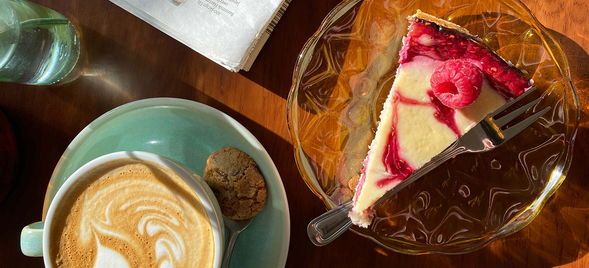

Over Billy's.
Geen lang verhaal — gewoon koffie waar we achter staan.
Van festivals naar de Daalseweg.
Billy's is opgericht door Merel & Alissa. Het begon met RockaCoffee — onze mobiele bar die festivalgangers van een fatsoenlijke kop koffie voorzag. In oktober 2022 vonden we ons vaste plekje op de Daalseweg.
De ruimte voelt als een vintage huiskamer met een rauw randje. Geen pretentie, geen menukaart van drie pagina's met termen die je moet googlen — gewoon koffie waar over nagedacht is, en eten dat erbij past.
De rest is gastvrijheid. Tafels waar je rustig kunt zitten, gesprekken die niet hoeven te kloppen op de klok. Dat is Billy's.


Wat staat er in je kopje?
Onze bonen komen van Blommers Coffee — onze Nijmeegse koffiebrander om de hoek.
We hebben een vaste huisblend die in elke melkdrank past, en een wisselende single origin die om de zoveel weken verandert. Vraag aan de bar wat er nu draait — daar zijn we het liefst over in gesprek.
Ontbijt, lunch en huisgemaakt zoet.
Naast onze koffie hebben we een keuken voor ontbijt en lunch, en een vitrine met huisgemaakt zoet.
De kaart wisselt mee met het seizoen. Voor de actuele opties — kijk op de menu-pagina of vraag aan de bar.

Eerlijk. Vers. Niet ingewikkeld.
Lokaal
Bonen van Blommers Coffee — onze koffiebrander hier in Nijmegen. Geen lange aanvoerlijnen.
Huisgemaakt
De vitrine met zoet wordt door onszelf gemaakt. Wat erin ligt, vraag je gewoon.
Aanwezig
In het weekend laat je je laptop thuis. Geen schermen, gewoon ruimte voor wie er is.
Toegankelijk
Specialty coffee zonder dat je een vocabulaire moet leren. Vragen mag, altijd.